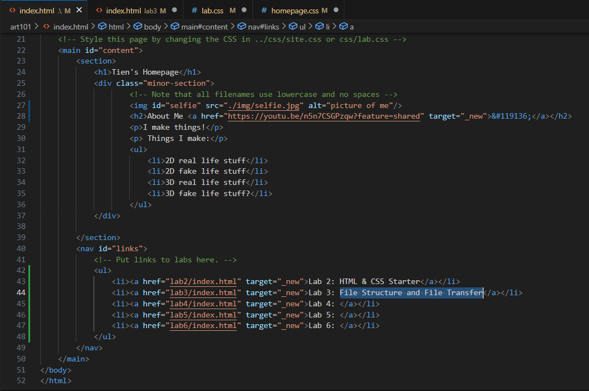
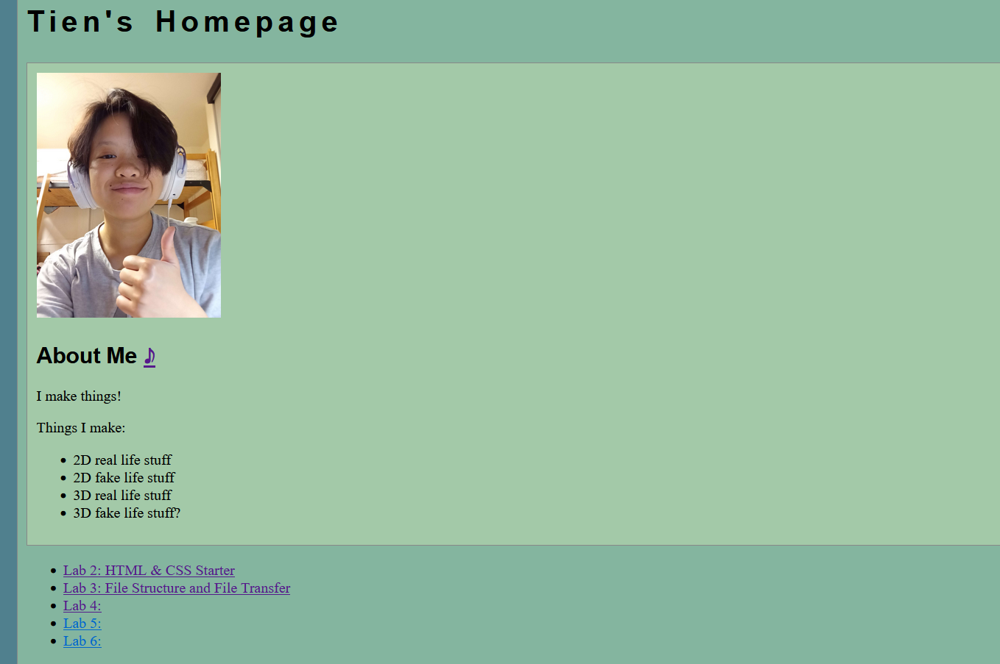

Lab 3 - File Structure and File Transfer
The goal of this lab was to create a local file structure with index.htmls and explore using it to build my site.
Challenges
Creating the file system and making the index.htmls were easy since I had been mostly given them,
but I had a hard part figuring out exactly how to format the links between the different files. In the end I just looked at the instructor's example,
which seemed to work, but I don't know if it'll work live since the way you navigate the file structure is different with Github Pages.
I also tried to use a grid to arrange the screenshots on my page, but as you can see they don't exactly work the best. Grid stuff from w3schools at
this link.
Thoughts
CSS is really hard! I still haven't quite figured out how to make it look the way I want to yet, but I think as long as I keep experimenting (and googling) I'll be able to figure it out. I really wanna get better at it, but it's hard for me to hash out the logic + the visual result.
Results
The index.html for this lab is right here! Yo! Here's some screenshots from the rest of the lab:
My file structure
My main index.html
My homepage live
